Drawn from two real charts' own data and their own layout. Only the look is new here: the boxes stand where today's layout puts them.
This chart has only "uses" and "creates" links, so every line is quiet. Its one long name is wrapped, which makes it 236 narrower.


A chart with "holds" links: the skeleton stands out in the accent, with a diamond at the holder, and what merely uses or creates stays quiet.

